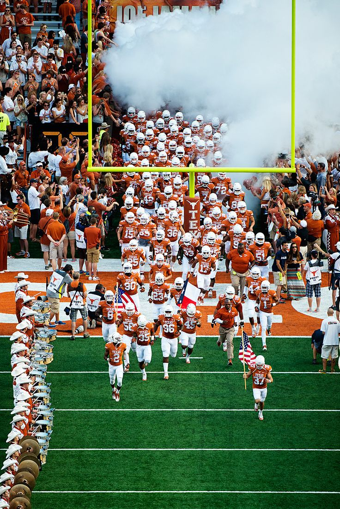
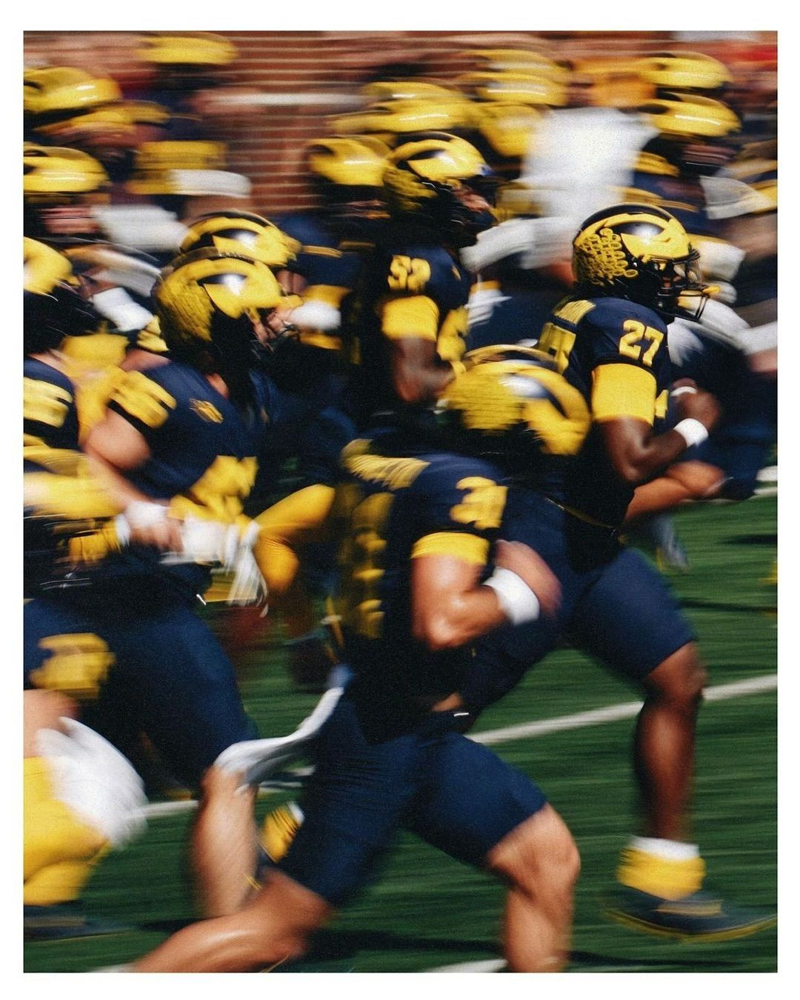
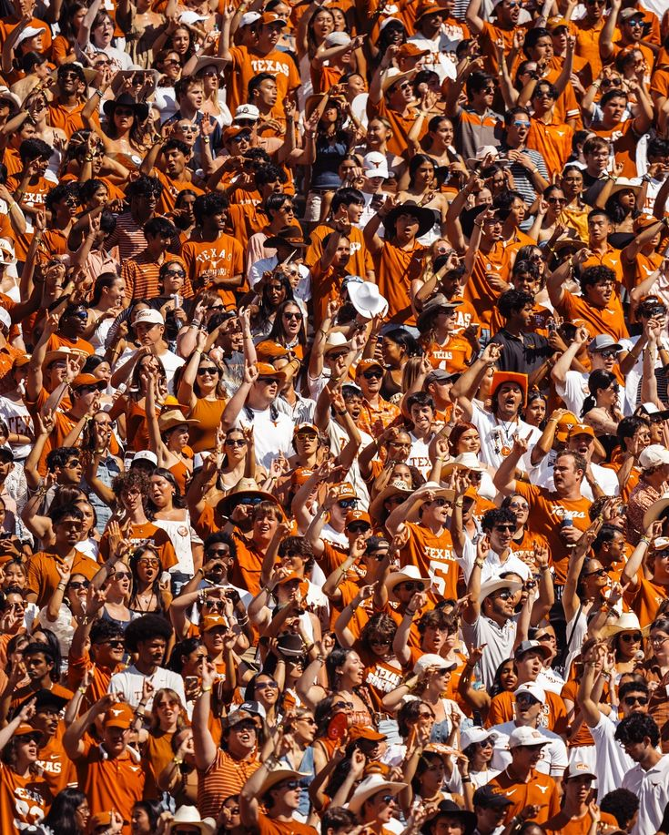
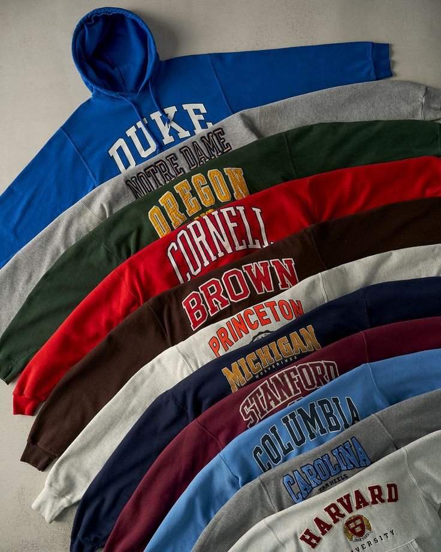
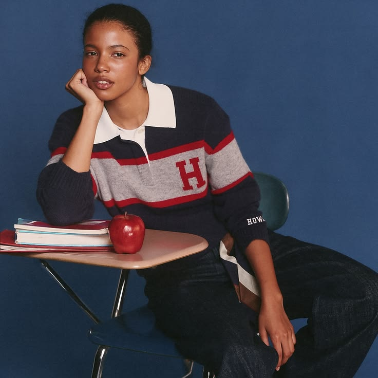

Tuesday, Oct 20, 2026
College football has a dress code, even if nobody officially wrote one. On Saturdays, campuses become a sea of school colors, stadiums fill with jerseys and vintage sweatshirts, and tailgates turn into unofficial fashion shows. From the polished dresses of SEC game days to the oversized layers and classic collegiate staples seen across the Big Ten, what fans wear is part of the game day experience.

DKR Stadium, Austin. Photo via Texas Longhorns.
Before the uniforms, the big rivalries, and the packed stadiums, there were the colors. Across American colleges, a handful of carefully chosen shades became symbols of institutions, representing everything from school history to the communities built around them.
At the University of Texas, burnt orange and white grew from a series of color experiments. They first introduced burnt orange uniforms in 1925, while Coach Darrell K. Royal later refined the burnt orange shade you see today in the 1960s. The unique, darker orange shade eventually became inseparable from Longhorn football. At the University of Michigan, Michigan Maize and Michigan Blue distinguish the Wolverines, while the University of Oregon’s UO Green and UO Yellow remain a vibrant palette in the nation. Each team operates under a strict HEX color, with major schools actually owning legal rights to their own codes.
No two schools tell exactly the same story; some colors were selected through student votes, others emerged through athletics, and many evolved. Eventually, these shades became more than design choices; they became shorthand for belonging. And, on game day, a color can identify a stranger as a fellow fan before either person says a word.

Sea of Maize and Blue. Photo via Randall Xiao.
Everything is bigger in Texas, including the spectacle of college football. The University of Texas at Austin has built a distinctive game day identity around burnt orange, the Longhorn mascot, and the familiar sight of thousands of fans filling DKR Stadium. The color appears across jerseys, hats, dresses, boots, and accessories. In Austin, school pride becomes part of the city's visual identity on Saturdays. Texas also illustrates how college football has grown beyond the stadium. Tailgates, live music, campus activations, and branded merchandise have turned game day into a multi-day event.
The same spectacle plays out differently across the country. In the SEC, schools like Alabama, Georgia, and Ole Miss have developed traditions in which the pregame gathering can be as important as the game itself. In the Big Ten, Michigan, Ohio State, Penn State, and Wisconsin offer another version of the game day ritual. And then there are the HBCUs, where football intersects with homecoming, band culture, alumni reunions, and campus pride. At schools like Howard, Florida A&M, and Jackson State, the atmosphere surrounding the game extends into a broader celebration of Black college culture. The marching bands and homecoming outfits make the weekend a cultural event in its own right.
Whether it is burnt orange in Austin, crimson in Tuscaloosa, maize in Ann Arbor, or dark midnight at Howard, the colors do the same work; they turn an institution into a collective identity.

Burnt orange. Photo via Texas Longhorns.
With the resurgence of vintage apparel across streetwear, resale, and contemporary fashion, collegiate merchandise has found a new audience. Vintage college sweatshirts and jerseys are no longer reserved for students and alumni. Their faded graphics, oversized silhouettes, and familiar school colors have made them staples of a wider fashion landscape.
The market reflects that appeal. Rare pieces can command considerably higher prices, depending on their age, condition, design, and provenance. For collectors, alumni, and devoted fans, the value extends beyond the garment itself. An old university logo can represent a championship season, a family connection, or years of loyalty to a school. What was once everyday campus apparel becomes a piece of institutional history, carrying its colors into a new generation.

Rebalance Vintage. Photo via Pinterest.
College football has become an increasingly visible meeting point for fashion, retail, and entertainment. Universities are no longer represented only by their athletic departments. Their colors, mascots, and logos are part of a wider marketplace that includes streetwear, footwear, lifestyle brands, and limited-edition merchandise.
Rather than simply selling a shirt, brands become part of the day surrounding the game. The collaboration brings together music, student culture, and collegiate identity in a way that feels native to the campus.
By tapping into collegiate merchandise, popular brands like Mad Happy, Lululemon, Aviator Nation, and J.Crew are reaching new audiences. The opportunity is not limited to major retailers, university bookstores, independent designers, vintage sellers, and officially licensed collections all contribute to how school identity is translated into clothing. At its best, collegiate merchandise moves beyond a logo printed on a blank shirt. It uses color, graphics, materials, and silhouette to create something fans want to wear long after the final whistle.
As partnerships become more integrated into campus life, the question is no longer simply what fans wear to a game; it’s how brands can participate in traditions that already mean something to the people who live them.

'47 x J.Crew vintage wool Howard University rugby. Photo via J.Crew.
College football lives on the field, but its identity spreads to the stands, on campus, across nations and in the clothes people choose to wear.
A school color can begin as a practical decision and become a tradition. A sweatshirt can start as merchandise and become a family keepsake. A vintage jersey can move from the stadium into the street, carrying its history into a different generation. Some celebrate through elaborate outfits, others through familiar layers, and others through the collective spectacle of a marching band, a packed stadium, and thousands of people wearing the same colors.
Fashion gives these traditions a visible form. It allows people to represent where they studied, where they grew up, or simply the community they choose to stand behind. Every Saturday, the uniforms change, the rivalries return, and the colors fill the stands again.